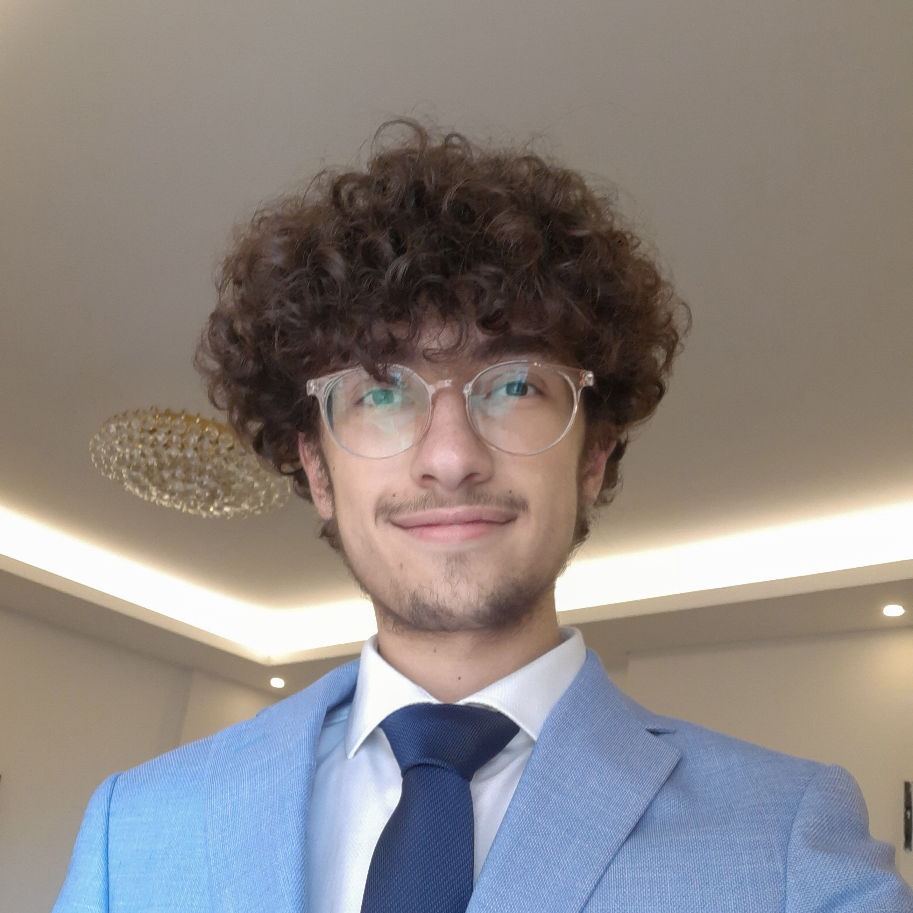
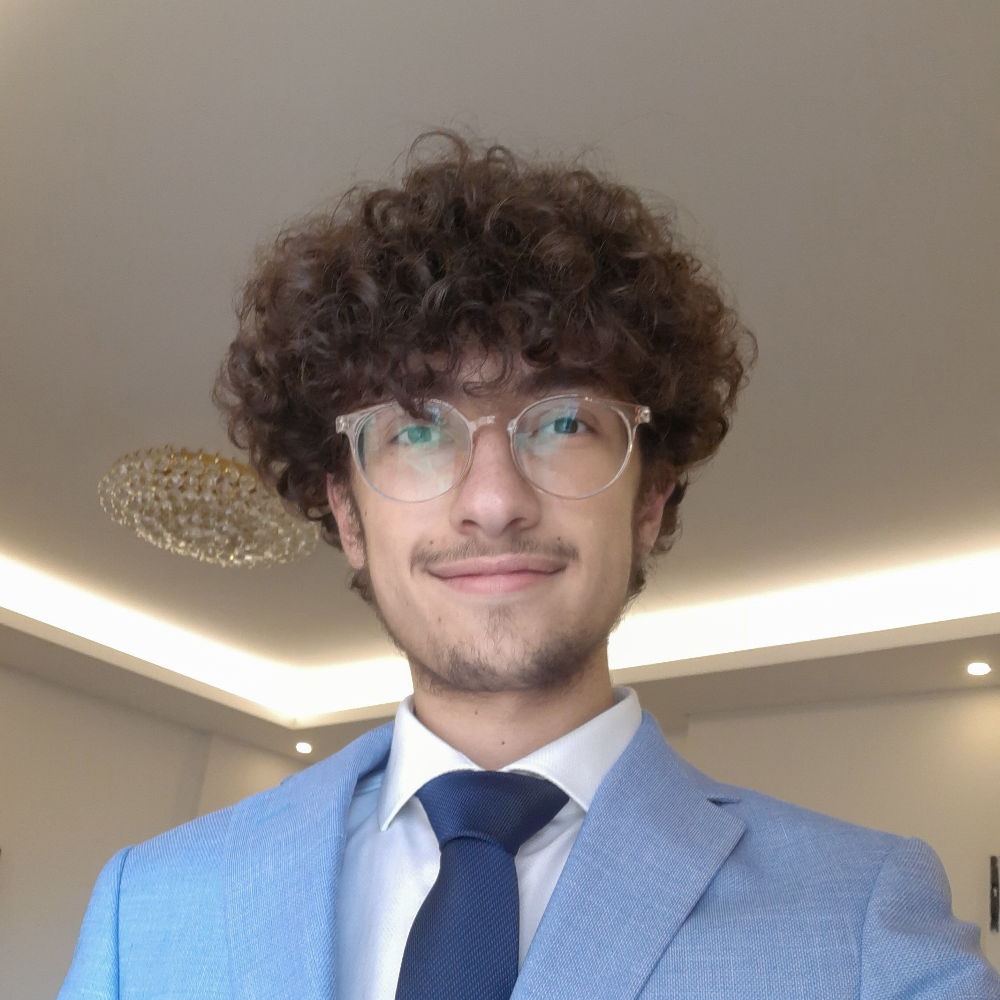

[about]
[experience]
[research]
[others]

Senior computer science undergrad at Saint Joseph University of Beirut.
Currently working under the scope of a doctoral thesis that tackles Automated UI Testing for Large-Scale Web Applications.
 (photo credit: me)
(photo credit: me)

Ghady Youssef
[email] [linkedin] [github]Senior computer science undergrad at Saint Joseph University of Beirut.
About
I'm a third-year Computer Science student with a keen interest in understanding and building secure, reliable systems. Throughout my studies, I have focused on the foundational principles of software development, and I plan to continue on this path. I've always been curious about how computers interpret my code, the inner workings of operating systems and kernels like Linux, and how various components interconnect.Research interests
Programming Languages & Compilers, Operating Systems, Software Engineering and Algorithms.Currently working under the scope of a doctoral thesis that tackles Automated UI Testing for Large-Scale Web Applications.
Experience
Software Engineer Intern
Murex
Jun. 2024 — Aug. 2024
Software Engineer Intern
OBSoft
Sep. 2023 — Nov. 2023
Others
When I’m not focused on my studies, you can catch me snapping photos of nature or the night sky. And in winter, I love hitting the slopes!
(photo credit: me)